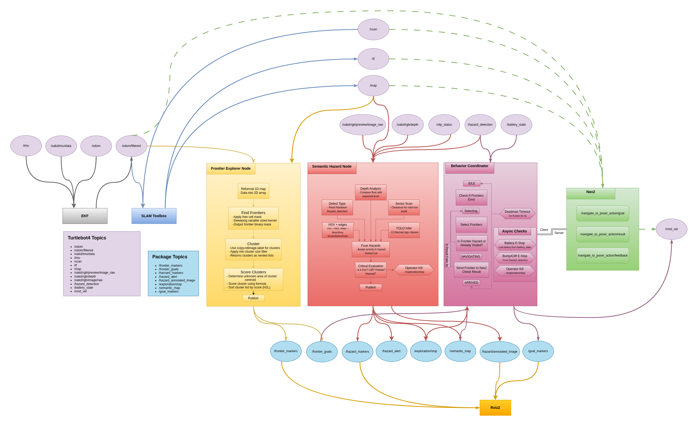
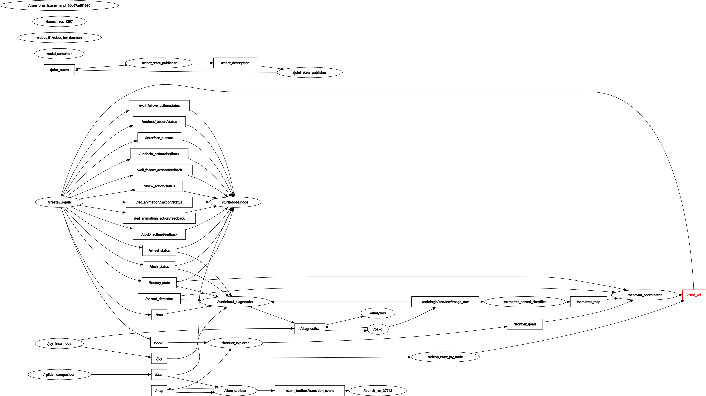
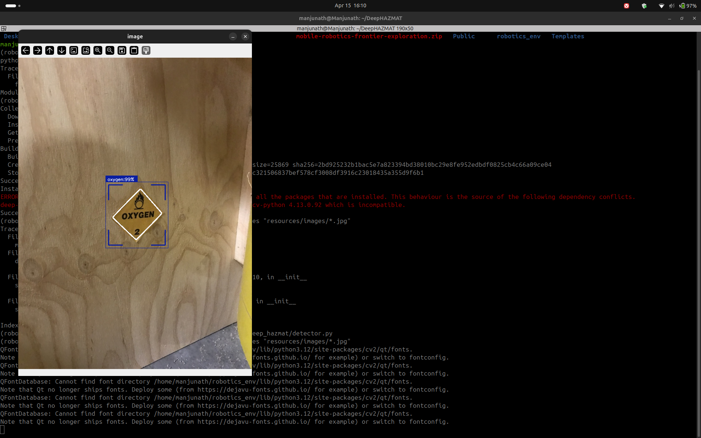
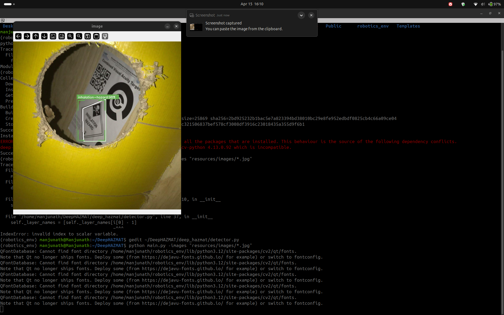
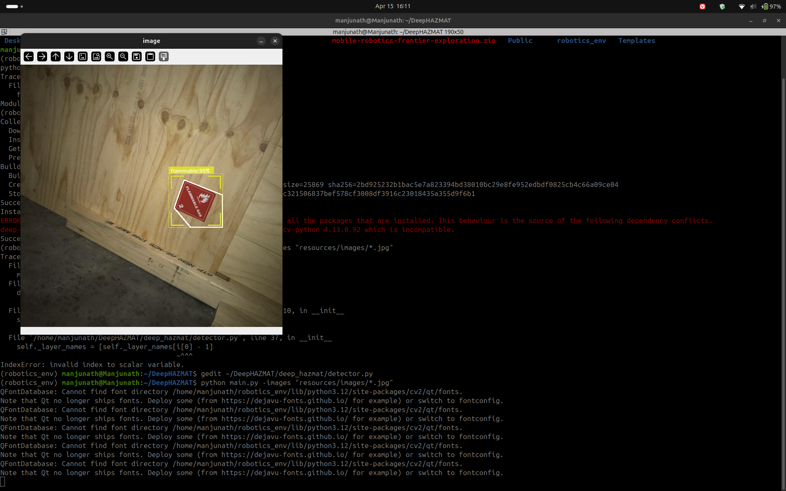

Overview
Milestone 2 documents our transition from system design (M1) to working implementation. This milestone presents concrete evidence of three custom ROS2 nodes running on the TurtleBot4 Lite hardware platform, a complete single-command launch system, and a recorded ROS bag demonstrating live frontier exploration with semantic hazard classification.
Our system enables a TurtleBot4 Lite to autonomously explore unknown indoor environments, detect and classify environmental hazards using camera, depth, LiDAR, and onboard sensors, and navigate safely by avoiding dangerous frontier zones — all without human intervention.
What we built
frontier_explorer_node.pysemantic_hazard_classifier_node.pybehavior_coordinator_node.pyexploration.launch.py- DeepHAZMAT YOLOv3-tiny integration
Evidence provided
- Demo video — frontier exploration
- RQT node graph — live system
- ROS bag — full sensor recording
- GitHub — all code pushed
- Math PDFs — derivations
System Architecture
The full exploration stack connects four primary subsystems: SLAM Toolbox builds the occupancy map, the frontier explorer identifies exploration targets, the semantic hazard classifier labels dangerous zones, and the behavior coordinator orchestrates safe navigation through Nav2.


Frontier Explorer Node
The frontier explorer node (frontier_explorer_node.py), developed by
Princess Colon, implements the core exploration strategy. It continuously processes
the SLAM occupancy map to identify unexplored regions and publishes ranked navigation
targets to the behavior coordinator.
Algorithm
The node subscribes to /map (OccupancyGrid from slam_toolbox) and
/odometry/filtered (EKF-filtered pose). Every time a new map arrives,
the following pipeline executes:
Frontier Detection Pipeline
- Cell scanning — iterate all free cells (value=0) in the OccupancyGrid
- Frontier test — a free cell is a frontier if its 3×3 kernel contains at least one unknown cell (value=−1) and no occupied cells (value=100)
- Clustering — connected frontier cells are grouped using
scipy.ndimage.label()with a 3×3 structure element; clusters smaller thanmin_cluster_size=10are discarded as noise - Scoring — each cluster is ranked by:
score = (α × size + β × unknown_near) / (dist + ε) - Publishing — sorted PoseArray published to
/frontier_goals; MarkerArray to/frontier_markersfor RViz2 visualization
The scoring formula balances three competing objectives: size rewards larger unknown regions, unknown_near rewards frontiers surrounded by more undiscovered space (maximizing information gain), and dist penalizes faraway frontiers to minimize unnecessary travel. The parameters α=1.0 and β=2.0 weight unknown area discovery twice as heavily as cluster size, reflecting the goal of maximizing map coverage.
Evidence
Video 1 — Frontier Explorer Node running on TurtleBot4 Lite. The robot autonomously selects and navigates to frontier goals while building the SLAM map in real time.
/map · /frontier_goals · /frontier_markers ·
/odometry/filtered · /scan
Semantic Hazard Classifier Node
The semantic hazard classifier (semantic_hazard_classifier_node.py)
is the core contribution of this milestone from Manjunath Kondamu. It runs at 10 Hz
and processes data from five independent sensor layers simultaneously, fusing
their outputs into a single hazard classification that is published to the robot's
semantic map.
The term "semantic" refers to attaching meaningful labels to spatial regions rather than simply marking them as occupied or free. Where a standard occupancy grid treats a wall and a fire identically, our semantic map distinguishes between CLEAR, DEBRIS, SMOKE, WATER, DARK, NARROW, POTHOLE, GLASS, HAZMAT, FIRE, and CLIFF zones — enabling the behavior coordinator to make informed navigation decisions.
5-Layer Detection Architecture
| Layer | Sensor | Topic | Detects |
|---|---|---|---|
| L1 Hardware | Create3 sensors | /hazard_detection/slip_status |
CLIFF (type=2), BUMP (type=1), wheel slip → WATER |
| L2 RGB Camera | OAK-D RGB | /oakd/rgb/preview/image_raw |
FIRE (orange/red HSV), WATER (blue/shiny), SMOKE (low saturation), HAZMAT (yellow diamond cue), DEBRIS (high Canny edge density), DARK (brightness <45) |
| L3 Depth | OAK-D stereo | /oakd/rgb/preview/depth |
POTHOLE (floor depth >1.5 m), GLASS (NaN ratio >50%), unstable terrain (depth variance >0.35) |
| L4 LiDAR | RPLIDAR A1M8 | /scan |
NARROW (both sides <0.35 m), DEAD_END (front + sides blocked), front obstacle <0.25 m |
| L5 HAZMAT YOLO | OAK-D RGB | /oakd/rgb/preview/image_raw |
13 HAZMAT sign classes via DeepHAZMAT YOLOv3-tiny (confidence >0.5) |
Hazard Priority Fusion
All five layers run in parallel every 100 ms. Their detections are collected into
a list and passed to fuse_hazards(), which selects the single
highest-priority hazard using a predefined severity scale:
HAZARD_PRIORITY = {
'CLIFF': 100, # immediate physical danger
'FIRE': 100, # immediate physical danger
'POTHOLE': 90, # structural floor hazard
'GLASS': 85, # invisible obstacle
'HAZMAT': 85, # chemical/biological risk
'WATER': 80, # slippery surface / flooding
'DEAD_END': 80, # navigation trap
'NARROW': 70, # passage risk
'SMOKE': 60, # visibility / air quality
'DARK': 60, # unknown danger
'DEBRIS': 40, # passable but cautious
'CLEAR': 0,
}
Critical hazards (CLIFF, FIRE, POTHOLE, HAZMAT) trigger an immediate
E-stop by publishing True to /exploration/stop, halting
the behavior coordinator and zeroing the velocity command.
DeepHAZMAT Integration
Layer 5 integrates the DeepHAZMAT framework (Najafi et al., 2021), which uses a YOLOv3-tiny architecture trained on the HAZMAT-13 dataset containing 52,845 images across 13 hazardous material sign categories. The model was selected specifically for its design under restricted computational resources — matching the constraints of the Raspberry Pi 4 (2 GB RAM) aboard the TurtleBot4 Lite.
13 HAZMAT Classes Detected
Poison · Flammable · Flammable Solid · Oxidizer · Explosive · Corrosive · Radioactive · Dangerous · Non-Flammable Gas · Infectious · Organic Peroxide · Inhalation Hazard · Spontaneously Combustible
Implementation Status
DeepHAZMAT Detection — Evidence
The following screenshots demonstrate DeepHAZMAT YOLOv3-tiny running on sample HAZMAT images, confirming successful detection and bounding box generation prior to robot camera integration.



Outputs
The classifier publishes to three topics simultaneously:
/semantic_map— OccupancyGrid where cell values encode hazard severity (0=CLEAR, 30=DEBRIS, 85=HAZMAT, 100=FIRE/CLIFF)/hazard_alert— String with current highest-priority hazard name/hazard_markers— MarkerArray of colored 3D cubes for RViz2 visualization
Behavior Coordinator Node
The behavior coordinator (behavior_coordinator_node.py) is the
decision-making brain of the exploration system. It integrates the outputs of
both the frontier explorer and the semantic hazard classifier to select safe
navigation goals and drive the robot to full map coverage.
5-State Machine
IDLE
Waits for first /frontier_goals message. Transitions to SELECTING immediately on receipt.
SELECTING
Iterates the ranked frontier list. Skips frontiers within 0.3 m of previously visited points, and skips any frontier whose map cell has a semantic value ≥70 (WATER or above). Sends the first valid goal to Nav2.
NAVIGATING
Monitors the active Nav2 NavigateToPose action. On success → ARRIVED. On failure → increments counter; after 3 consecutive failures marks the frontier unreachable and returns to SELECTING.
ARRIVED
Records the reached position in the visited list, resets the failure counter, and immediately transitions back to SELECTING to pick the next frontier.
When no valid frontiers remain (all visited or all hazardous), the node transitions
to DONE, publishes a zero velocity command, and emits
EXPLORATION_COMPLETE on /exploration/status.
Safety Systems
| Safety Trigger | Condition | Response |
|---|---|---|
| Battery E-stop | Battery percentage < 15% | Cancel Nav2 goal · zero velocity · transition to DONE |
| Cliff E-stop | /hazard_detection type=2 while NAVIGATING |
Cancel goal · zero velocity · return to SELECTING |
| Operator kill | /exploration/stop = True |
Immediate stop · transition to DONE |
| Deadman switch | /frontier_goals stale >5 s |
Zero velocity · return to IDLE |
| Nav2 failure limit | 3 consecutive goal failures | Mark frontier unreachable · try next frontier |
Launch System
The entire exploration stack launches with a single command via
exploration.launch.py. The launch file starts all subsystems
in the correct order with appropriate delays:
ros2 launch frontier_exploration_mapping exploration.launch.pyLaunch sequence
- slam_toolbox — async SLAM in mapping mode (resolution 0.05 m)
- robot_localization EKF — fuses wheel odometry + IMU →
/odometry/filtered - Nav2 — costmap, path planner (NavFn), DWA local controller
- frontier_explorer_node — starts immediately after Nav2
- semantic_hazard_classifier_node — starts immediately
- behavior_coordinator_node — delayed 5 s to allow SLAM and Nav2 to initialize
The use_sim_time:=true argument switches all nodes to Gazebo simulation
time for testing, while the default false uses hardware time for
deployment on the physical TurtleBot4 Lite.
ROS Bag Recording
A complete ROS bag was recorded during the frontier exploration demo run. The bag captures all sensor and algorithmic topics required for post-analysis and replay.
rosbag_full_frontier_functionalFormat: MCAP · Location:
ros2_ws/rosbags/Topics recorded:
/map · /scan · /odom ·
/odometry/filtered · /frontier_goals · /frontier_markers ·
/oakd/rgb/preview/image_raw · /oakd/rgb/preview/depth ·
/tf · /tf_static
To replay the bag:
ros2 bag play ros2_ws/rosbags/rosbag_full_frontier_functionalMathematical Foundations
The mathematical derivations supporting all algorithmic decisions in this system were compiled by Rohit Mane and are provided in full as LaTeX-formatted documents. Key derivations include the frontier scoring function, EKF state estimation equations, differential drive kinematics, occupancy grid Bayesian update rules, and the HSV threshold derivations for the semantic classifier.
Milestone 2 — Mathematical Documentation Part 1 Milestone 2 — Mathematical Documentation Part 2Team Contributions
The following table documents the specific technical contributions of each team member for Milestone 2.
| Team Member | Role | M2 Contributions |
|---|---|---|
Princess ColonPriColon |
Frontier Exploration Lead |
frontier_explorer_node.py — full implementation ·
SLAM on TurtleBot4 Lite hardware ·
ROS bag recording · Demo video ·
RViz2 config · RQT node graph · System architecture diagram
|
Rohit Manermane2 |
Mathematical Foundations | Frontier scoring formula derivation · EKF prediction and update equations · Differential drive kinematics proof · Occupancy grid Bayesian update · HSV threshold derivations · DWA planner velocity constraints · LaTeX documentation Parts 1 & 2 |
Manjunath KondamuMkondamu |
Hazard Mapping & Integration |
semantic_hazard_classifier_node.py — 5-layer detection ·
DeepHAZMAT YOLOv3-tiny integration ·
behavior_coordinator_node.py — 5-state machine ·
exploration.launch.py — single-command launch ·
YOLO weights packaged into ROS2 workspace ·
Milestone 2 website
|
Next Steps — Milestone 3
Hardware validation
Run the full autonomous exploration stack on the physical TurtleBot4 Lite in a disaster-scenario test environment with placed HAZMAT signs, debris, and simulated water hazards.
HAZMAT on robot camera
Complete end-to-end testing of DeepHAZMAT YOLOv3-tiny running on the OAK-D RGB feed from the TurtleBot4 Lite at real-time inference speeds.
Semantic map persistence
Merge the semantic hazard OccupancyGrid with the SLAM map so that hazard labels persist across the full explored area rather than just the camera's current field of view.
idsia-robotics dataset evaluation
Evaluate our HSV classifier against the Hazards&Robots dataset (324k frames, 20 anomaly classes) to quantify detection accuracy and tune thresholds for M3.